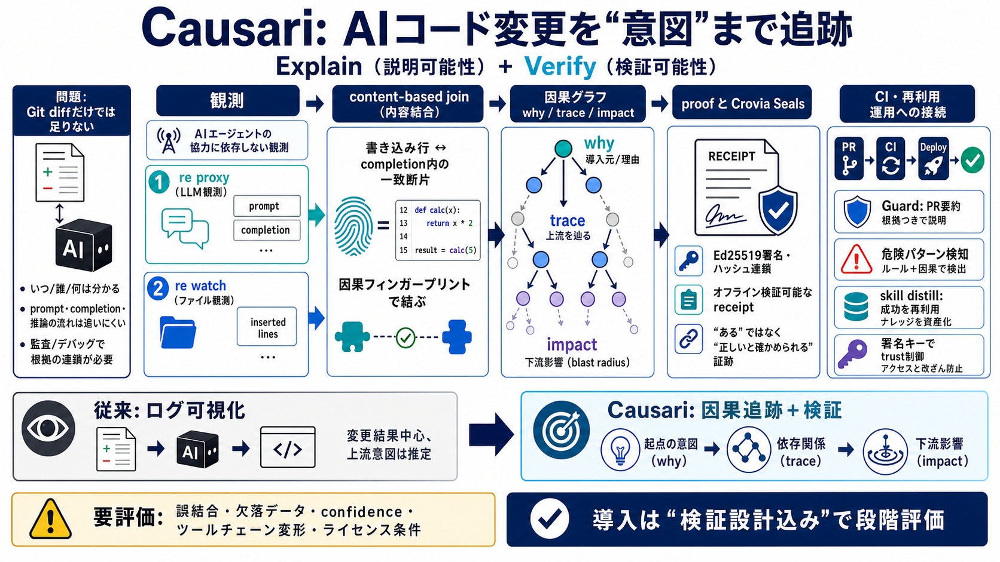

How to Configure Claude Code, Cursor, and Codex CLI
## How to Configure AI Coding Agents: SKILL.md, AGENTS.md, CLAUDE.md & .cursorrules. In 2026, you can configure an agent…

## How to Configure AI Coding Agents: SKILL.md, AGENTS.md, CLAUDE.md & .cursorrules. In 2026, you can configure an agent…
# MCP Server Overview. Model Context Protocol (MCP) is a free, open-source standard for connecting AI applications with …
# One Source of Truth for Your AI Agent Rules: Cursor, Claude Code, and Every Tool You’ll Adopt Next. Claude Code and Co…
Install MCP server on Cursor. Learn how to use the Model Context Protocol (MCP) to enable AI agents to securely access a…
# MCP Server. Fully hosted Model Context Protocol server for accessing Messari’s AI-powered crypto intelligence through …